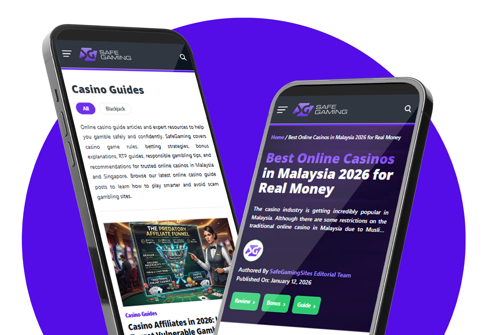
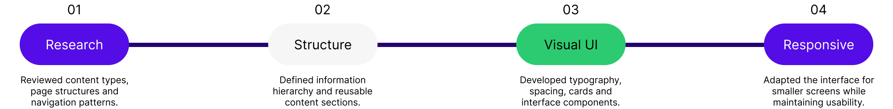
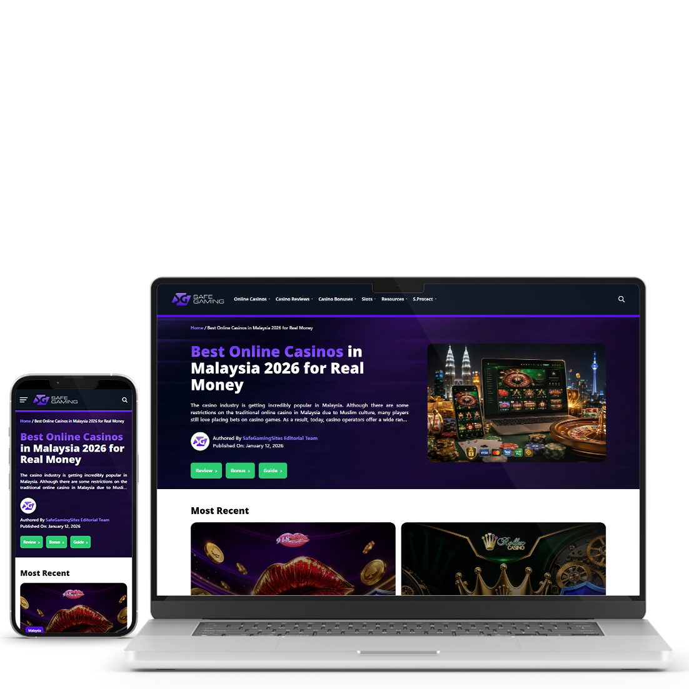
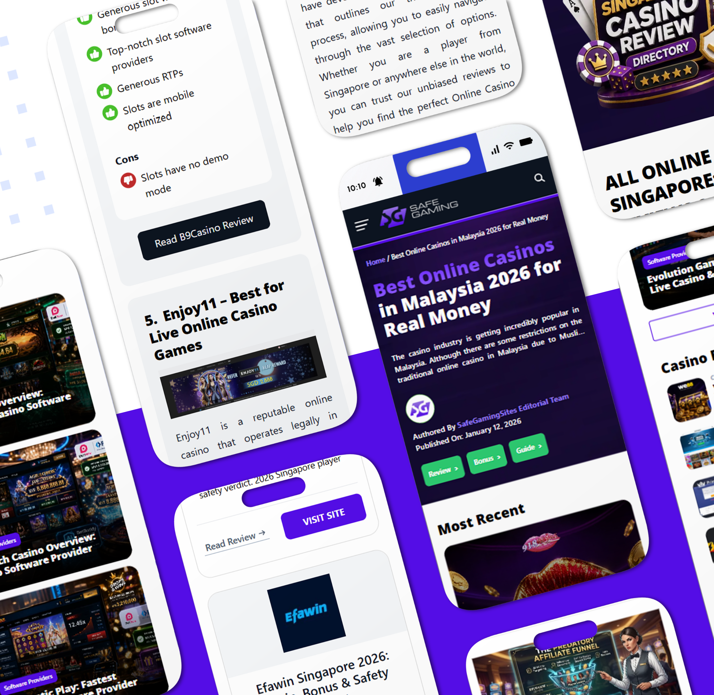

A content platform that makes casino reviews, guides and resources easier to find and scan.


The website contained a lot of casino-related content, spread across different pages and categories. Finding one specific piece of information could take several clicks.
Reviews, bonuses, guides and other resources did not always feel connected, so the browsing journey felt longer than it needed to be.

Users had to move through several categories and content sections to find reviews, guides and bonuses. The flow shows where the extra clicks and scrolling came from.
Simplify Navigation
Create clearer paths between reviews, bonuses, guides and related resources so users need fewer clicks.
Improve Content Discovery
Use clearer categories, related content and more visible navigation to help users find relevant information faster.
The design focused on three things: making the content easier to browse, making important information easier to scan, and keeping the interface consistent.

